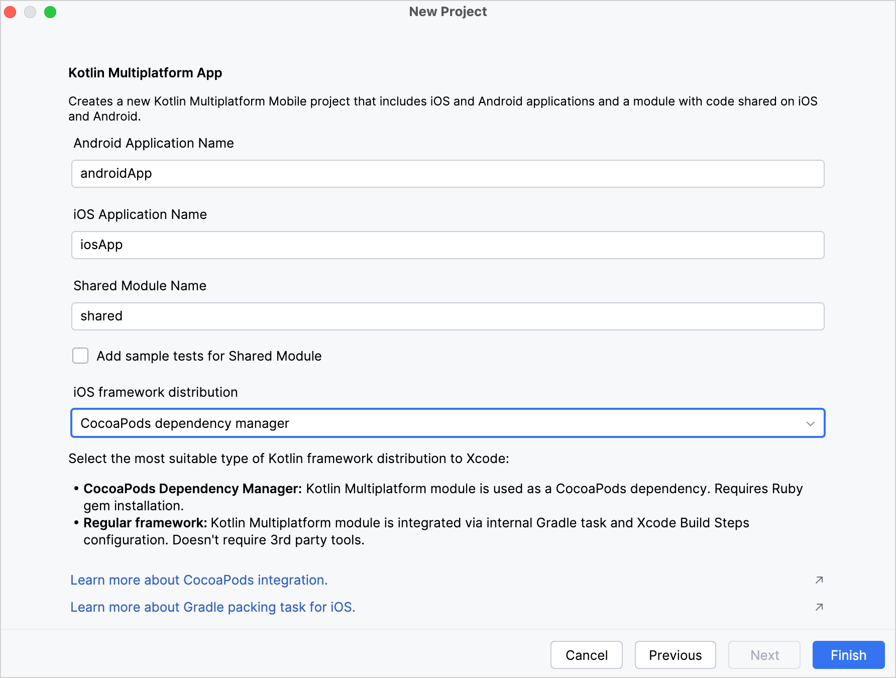

Kotlin/Native provides integration with the CocoaPods dependency manager. You can add dependencies on Pod libraries as well as use a multiplatform project with native targets as a CocoaPods dependency.
You can manage Pod dependencies directly in IntelliJ IDEA or Android Studio and enjoy all the additional features such as code highlighting and completion. You can build the whole Kotlin project with Gradle and not ever have to switch to Xcode.
You only need Xcode if you want to change Swift/Objective-C code or run your application on an Apple simulator or device. To work correctly with Xcode, you should update your Podfile.
When your environment is set up, you can create a new Kotlin Multiplatform project. For that, use the Kotlin Multiplatform web wizard or the Kotlin Multiplatform plugin for Android Studio.
Using web wizard
To create a project using the web wizard and configure the CocoaPods integration:
Click the Download button and unpack the downloaded archive.
In Android Studio, select File | Open in the menu.
Navigate to the unpacked project folder and then click Open.
Add the Kotlin CocoaPods Gradle plugin to the version catalog. In the gradle/libs.versions.toml file, add the following declaration to the [plugins] block:
kotlinCocoapods = { id = "org.jetbrains.kotlin.native.cocoapods", version.ref = "kotlin" }
Navigate to the root build.gradle.kts file of your project and add the following alias to the plugins {} block:
alias(libs.plugins.kotlinCocoapods) apply false
Open the module where you want to integrate CocoaPods, for example the composeApp module, and add the following alias to the plugins {} block:
In Android Studio, select File | New | New Project in the menu.
In the list of project templates, select Kotlin Multiplatform App and then click Next.
Name your application and click Next.
Choose CocoaPods Dependency Manager as the iOS framework distribution option.

Keep all other options default. Click Finish.
The plugin will automatically generate the project with the CocoaPods integration set up.
Configure the project
To configure the Kotlin CocoaPods Gradle plugin in your multiplatform project:
In build.gradle(.kts) of your project, apply the CocoaPods plugin as well as the Kotlin Multiplatform plugin.
plugins {
kotlin("multiplatform") version "2.1.20"
kotlin("native.cocoapods") version "2.1.20"
}
Configure version, summary, homepage, and baseName of the Podspec file in the cocoapods block:
plugins {
kotlin("multiplatform") version "2.1.20"
kotlin("native.cocoapods") version "2.1.20"
}
kotlin {
cocoapods {
// Required properties
// Specify the required Pod version here
// Otherwise, the Gradle project version is used
version = "1.0"
summary = "Some description for a Kotlin/Native module"
homepage = "Link to a Kotlin/Native module homepage"
// Optional properties
// Configure the Pod name here instead of changing the Gradle project name
name = "MyCocoaPod"
framework {
// Required properties
// Framework name configuration. Use this property instead of deprecated 'frameworkName'
baseName = "MyFramework"
// Optional properties
// Specify the framework linking type. It's dynamic by default.
isStatic = false
// Dependency export
// Uncomment and specify another project module if you have one:
// export(project(":<your other KMP module>"))
transitiveExport = false // This is default.
}
// Maps custom Xcode configuration to NativeBuildType
xcodeConfigurationToNativeBuildType["CUSTOM_DEBUG"] = NativeBuildType.DEBUG
xcodeConfigurationToNativeBuildType["CUSTOM_RELEASE"] = NativeBuildType.RELEASE
}
}
Run Reload All Gradle Projects in IntelliJ IDEA (or Sync Project with Gradle Files in Android Studio) to re-import the project.
Generate the Gradle wrapper to avoid compatibility issues during an Xcode build.
When applied, the CocoaPods plugin does the following:
Adds both debug and release frameworks as output binaries for all macOS, iOS, tvOS, and watchOS targets.
Creates a podspec task which generates a Podspec file for the project.
The Podspec file includes a path to an output framework and script phases that automate building this framework during the build process of an Xcode project.
Update Podfile for Xcode
If you want to import your Kotlin project to an Xcode project:
Make changes in your Podfile:
If your project has any Git, HTTP, or custom Podspec repository dependencies, you should specify the path to the Podspec in the Podfile.
For example, if you add a dependency on podspecWithFilesExample, declare the path to the Podspec in the Podfile:
target 'ios-app' do
# ... other dependencies ...
pod 'podspecWithFilesExample', :path => 'cocoapods/externalSources/url/podspecWithFilesExample'
end
The :path should contain the filepath to the Pod.
When you add a library from the custom Podspec repository, you should also specify the location of specs at the beginning of your Podfile:
source 'https://github.com/Kotlin/kotlin-cocoapods-spec.git'
target 'kotlin-cocoapods-xcproj' do
# ... other dependencies ...
pod 'example'
end
Run pod install in you project directory.
When you run pod install for the first time, it creates the .xcworkspace file. This file includes your original .xcodeproj and the CocoaPods project.
Close your .xcodeproj and open the new .xcworkspace file instead. This way you avoid issues with project dependencies.
Run Reload All Gradle Projects in IntelliJ IDEA (or Sync Project with Gradle Files in Android Studio) to re-import the project.
If you don't make these changes in the Podfile, the podInstall task will fail, and the CocoaPods plugin will show an error message in the log.
Possible issues and solutions
CocoaPods installation
Ruby installation
CocoaPods is built with Ruby, and you can install it with the default Ruby that should be available on macOS. Ruby 1.9 or later has a built-in RubyGems package management framework that helps you install the CocoaPods dependency manager.
If you're experiencing problems installing CocoaPods and getting it to work, follow this guide to install Ruby or refer to the RubyGems website to install the framework.
Version compatibility
We recommend using the latest Kotlin version. If your current version is earlier than 1.7.0, you'll need to additionally install the cocoapods-generate plugin.
However, cocoapods-generate is not compatible with Ruby 3.0.0 or later. In this case, downgrade Ruby or upgrade Kotlin to 1.7.0 or later.
Build errors when using Xcode
Some variations of the CocoaPods installation can lead to build errors in Xcode. Generally, the Kotlin Gradle plugin discovers the pod executable in PATH, but this may be inconsistent depending on your environment.
To set the CocoaPods installation path explicitly, you can add it to the local.properties file of your project manually or using a shell command:
If using a code editor, add the following line to the local.properties file:
If the Pod doesn't contain a .modulemap file, like the pod("NearbyMessages"), specify the main header explicitly:
pod("NearbyMessages") {
version = "1.1.1"
headers = "GNSMessages.h"
}
Check the CocoaPods documentation for more information. If nothing works, and you still encounter this error, report an issue in YouTrack.
Rsync error
You might encounter the rsync error: some files could not be transferred error. It's a known issue that occurs if the application target in Xcode has sandboxing of the user scripts enabled.
To solve this issue:
Disable sandboxing of user scripts in the application target:
Stop the Gradle daemon process that might have been sandboxed: